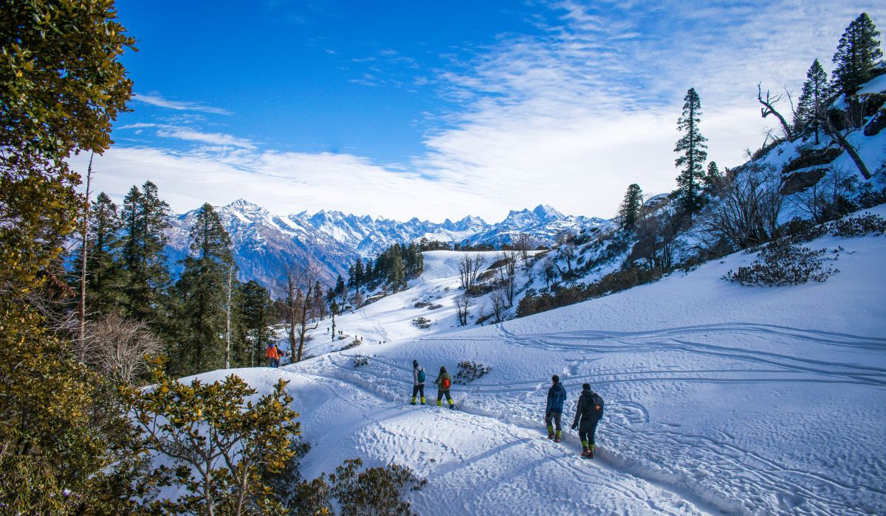

Himachal Pradesh
"Unforgettable Himachal"
Quick Facts
Popular Tourist Attractions
Shimla
The queen of hills, a popular colonial-era hill station with snow, mall road, and charm.
Manali
Adventure hub with rivers, snow, trekking, and breathtaking valleys.
Dharamshala
Home to the Dalai Lama, peaceful monasteries, and stunning views of the Dhauladhar range.
Nature & Wildlife
Himachal is rich in biodiversity with sanctuaries like Great Himalayan National Park and Pin Valley, home to snow leopards, Himalayan monals, and ibex.
Famous Personalities
- Anupam Kher: Renowned Bollywood actor born in Shimla.
- Yami Gautam: Actress hailing from Bilaspur.
- Prem Kumar Dhumal: Former Chief Minister and prominent leader.
Local Handicrafts
Handloom shawls (like Kullu and Kinnauri), wood carving, Chamba rumals, and traditional jewelry are popular in Himachal Pradesh.
Climate
Himachal experiences a pleasant to alpine climate with cold winters, snowy peaks, and cool summers. Monsoons are moderate, and winters can be harsh in upper regions.
Culture & Festivals
Folk Dance & Music
Traditional dances like Nati and Kullu folk are performed during local festivals.
Festivals
Major festivals include Dussehra in Kullu, Shivratri in Mandi, and Phagli in Lahaul.
Cuisine
Specialties include Dham, Siddu, Tudkiya Bhath, and Chana Madra.
Clothing
Woolen caps, pattu, chola, and colorful scarves are popular in local wear.
Did You Know? Himachal Pradesh is one of the few states with 100% electrification and is a leader in organic farming and hydropower generation.
Note: Information may be subject to updates. Kindly notify us of any discrepancies.